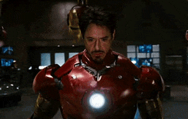

The Avengers
The Avengers are a fictional team of superheroes that appears in American comic books published by Marvel Comics. The team made its debut in The Avengers #1 (cover-dated Sept. 1963), created by writer-editor Stan Lee and artist/co-plotter Jack Kirby. Labeled "Earth's Mightiest Heroes", the Avengers consisted of Iron Man, Ant-Man, Hulk, Thor and the Wasp. The original Captain America was discovered trapped in ice in issue #4, and joined the group after they revived him.
Iron Man

Tony Stark. Genius, billionaire, playboy, philanthropist. Son of legendary inventor and weapons contractor Howard Stark. When Tony Stark is assigned to give a weapons presentation to an Iraqi unit led by Lt. Col. James Rhodes, he's given a ride on enemy lines. That ride ends badly when Stark's Humvee that he's riding in is attacked by enemy combatants. He survives - barely - with a chest full of shrapnel and a car battery attached to his heart. In order to survive he comes up with a way to miniaturize the battery and figures out that the battery can power something else. Thus Iron Man is born. He uses the primitive device to escape from the cave in Iraq. Once back home, he then begins work on perfecting the Iron Man suit. But the man who was put in charge of Stark Industries has plans of his own to take over Tony's technology for other matters.